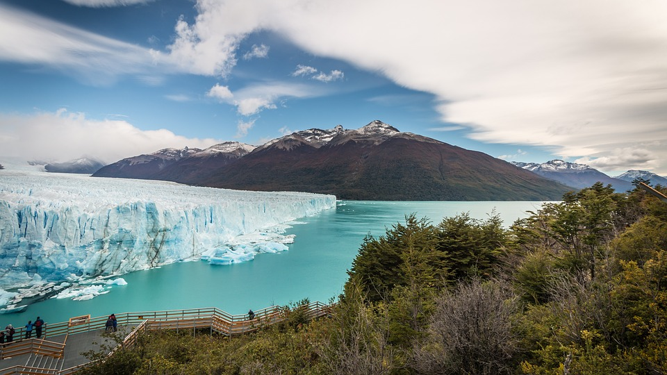

HTML5
Bianca
Bianca

Liked by 4Geeks Academy, html5, Web and 100,000 others
The Perito Moreno Glacier (Spanish: Glaciar Perito Moreno) is a glacier located in Los Glaciares National Park in southwest Santa Cruz Province, Argentina. It is one of the most important tourist attractions in the Argentine Patagonia.